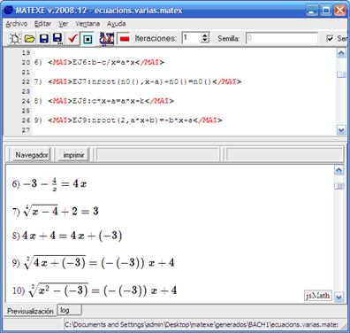

Utilización del programa
En la ventana principal del programa se dispone de tres paneles: el panel de Código, en el que introducimos lenguaje Matexe. El panel de previsualización, en el que se obtiene el documento final, y el panel log, en el que se puede ver la sesión Maxima y los posibles errores.
Con la tecla de función F6 se puede modificar la distribución de la ventana dividiéndola en dos paneles.
Una vez introducido el código, se puede generar el documento resultante pulsando la tecla de función F9.
Antes de generar un documento se puede ajustar la semilla a partir de la cual se producirán los valores aleatorios que usará el programa. También se puede indicar el número de veces que se repetirá la generación del documento.
Created with the Personal Edition of HelpNDoc: Free iPhone documentation generator